Análise de Tarefas¶
Introdução¶
Uma análise de tarefas é utilizada para se ter um entendimento sobre qual é o trabalho dos usuários, como eles o realizam e por quê. Nesse tipo de análise, o trabalho é definido em termos dos objetivos que os usuários querem ou precisam atingir em seu contexto (BARBOSA et al., 2021, p. 177)[PRINT] 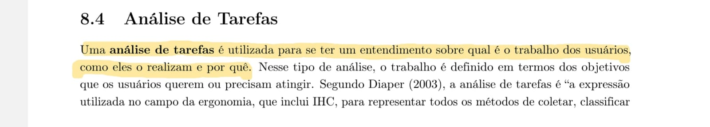
Na área de Interação Humano-Computador (IHC), a análise de tarefas pode ser empregada em três atividades habituais do projeto: para a análise da situação atual (seja ela apoiada ou não por um sistema computacional), para o (re)design de um sistema computacional ou para a avaliação do resultado de uma intervenção que inclua a introdução de um (novo) sistema computacional. O texto ilustrado também ressalta que, quando o objetivo é avaliar um sistema computacional existente, a análise de tarefas pode ser bem concreta, descrevendo o comportamento do usuário de forma detalhada (BARBOSA et al., 2021, p. 178)[PRINT] 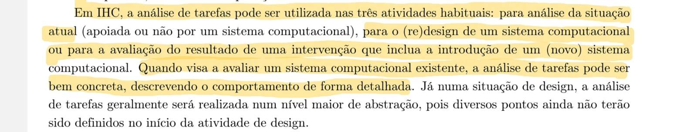
Análise Hierárquica de Tarefas (HTA)¶
Introdução¶
A Análise Hierárquica de Tarefas (HTA - Hierarchical Task Analysis) foi desenvolvida na década de 1960 para entender as competências e habilidades exibidas em tarefas complexas e não repetitivas, bem como para auxiliar na identificação de problemas de desempenho. Ela ajuda a relacionar o que as pessoas fazem (ou se recomenda que façam), por que o fazem, e quais as consequências caso não o façam corretamente. Diferente das abordagens de sua época, o método se baseia em psicologia funcional, e não comportamental (BARBOSA et al., 2021)[PRINT] 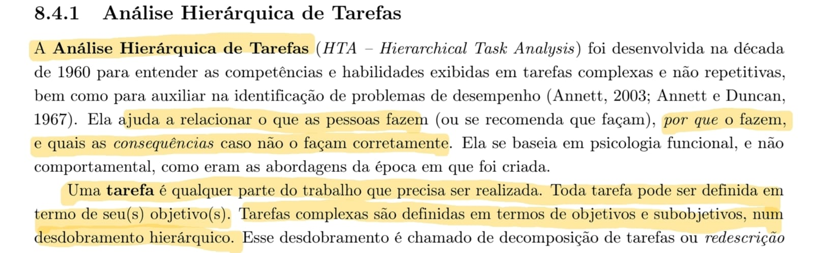
Na HTA, uma tarefa é qualquer parte do trabalho que precisa ser realizada, e toda tarefa pode ser definida em termos de seu(s) objetivo(s). Tarefas complexas são definidas em termos de objetivos e subobjetivos, em um desdobramento hierárquico que é chamado de decomposição de tarefas ou redescrição. No nível mais baixo da hierarquia de objetivos, cada subobjetivo é alcançado por uma operação, que é considerada a unidade fundamental em HTA. Esses elementos são organizados em diagramas que demonstram as relações estruturais do plano, que podem ser do tipo sequencial (1>2), seleção (1/2) ou paralelo (1+2) (BARBOSA et al., 2021)[PRINT] 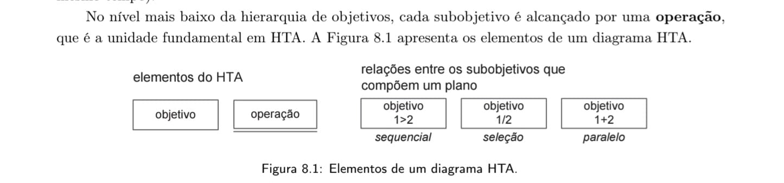
A aplicação prática do método resulta na construção de uma árvore visual de decomposição. O diagrama parte de um objetivo geral no topo (por exemplo, "0. Cadastrar projeto final") e ramifica-se para subobjetivos e operações numeradas, explicitando os planos de execução e o fluxo que o usuário deve percorrer para concluir o trabalho (BARBOSA et al., 2021)[PRINT] 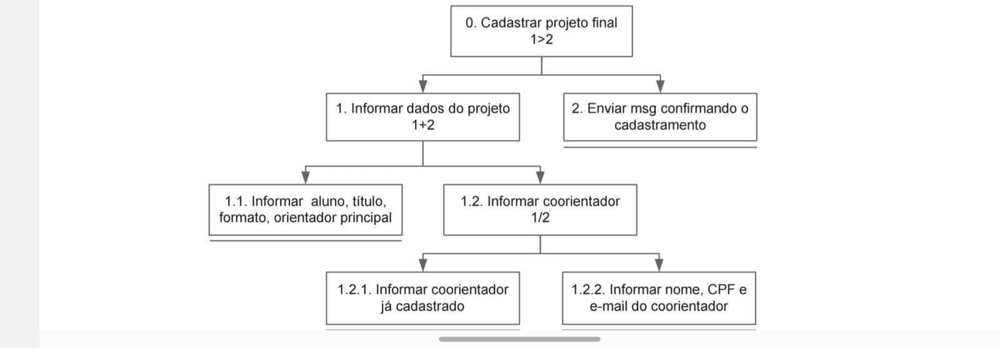
Análise de Tarefas: Método GOMS¶
Introdução ao GOMS¶
O GOMS é um método utilizado para descrever uma tarefa e o conhecimento do usuário sobre como realizá-la, estruturando-se em quatro componentes fundamentais: objetivos (goals), operadores (operators), métodos (methods) e regras de seleção (selection rules). Os objetivos representam exatamente o que o usuário deseja realizar utilizando o software, como, por exemplo, editar um texto. (BARBOSA et al., 2021)[PRINT] 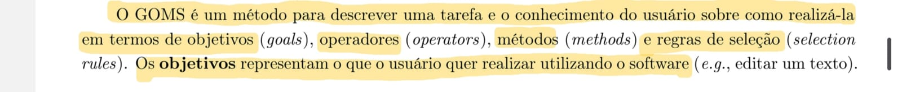
Os operadores são descritos como primitivas internas (ações cognitivas) ou externas (ações concretas permitidas pelo software, como digitar no teclado ou clicar em um botão). Os métodos consistem em sequências bem conhecidas de subobjetivos e operadores que permitem atingir um objetivo maior. Quando existe mais de um método viável, aplicam-se as regras de seleção, que representam a tomada de decisão do usuário sobre qual caminho utilizar em uma determinada situação. (BARBOSA et al., 2021)[PRINT] 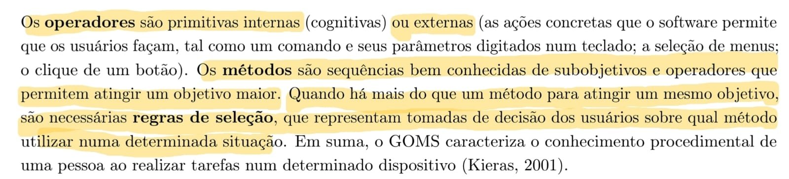
Dentro da família de modelos baseados em GOMS, existem variações com diferentes níveis de complexidade e foco. Destacam-se as técnicas KLM (Card et al., 1983), CMN-GOMS (Card et al., 1983) e CPM-GOMS (John e Gray, 1995). (BARBOSA et al., 2021)[PRINT] 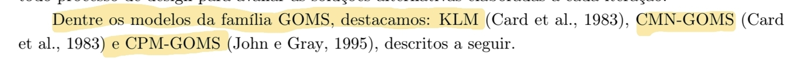
KLM (Keystroke-Level Method)¶
O KLM é a técnica mais simples da família GOMS e atua de forma limitada a um conjunto predefinido de operadores primitivos. Estes operadores incluem: K (pressionar tecla ou botão), P (apontar com o mouse), H (mover as mãos para o teclado ou dispositivo), D (desenhar um segmento de reta), M (preparação mental para realizar uma ação) e R (tempo de resposta do sistema onde o usuário deve esperar). (BARBOSA et al., 2021)[PRINT] 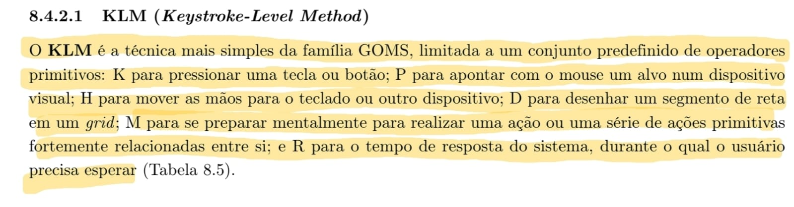
Que atribui durações médias (em segundos) para cada uma dessas operações do KLM. Por exemplo, a operação K (teclar) varia de 0,08s para um exímio digitador até 1,20s para alguém não familiarizado com o teclado, enquanto a preparação mental (M) consome em média 1,20s. (BARBOSA et al., 2021)[PRINT] 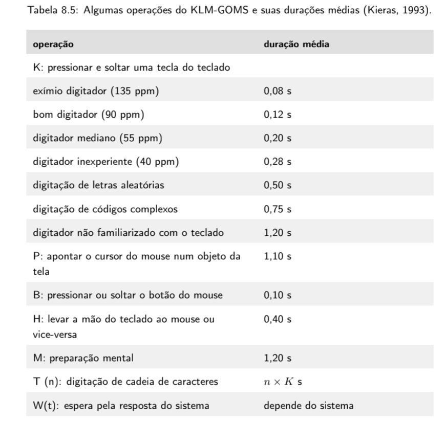
A aplicação prática desses valores pode ser observada na Tabela I, que demonstra o cálculo total de tempo para a tarefa de "Salvar arquivo". A análise compara diferentes métodos: usar o menu "Arquivo > Salvar" (totalizando 4,60s), clicar no botão de salvar na barra de ferramentas (3,10s) ou usar as teclas de atalho Ctrl+S (1,60s).
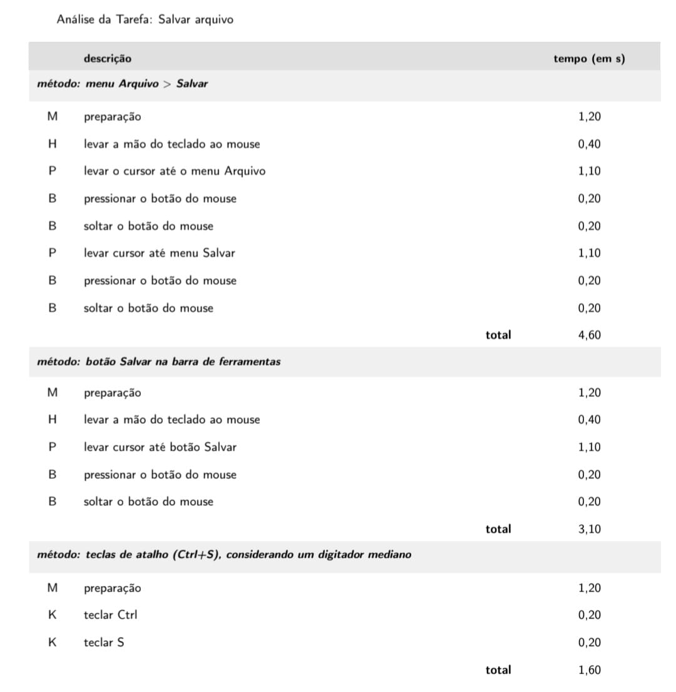
Fonte: BARBOSA et al. (2021, p.198)
CMN-GOMS¶
O CMN-GOMS refere-se à proposta original do método GOMS. Neste modelo, exige-se uma hierarquia estrita de objetivos, onde os operadores são executados estritamente em ordem sequencial. Os métodos são documentados utilizando uma notação muito semelhante a um pseudocódigo computacional, incorporando submétodos e estruturas condicionais. (BARBOSA et al., 2021)[PRINT] 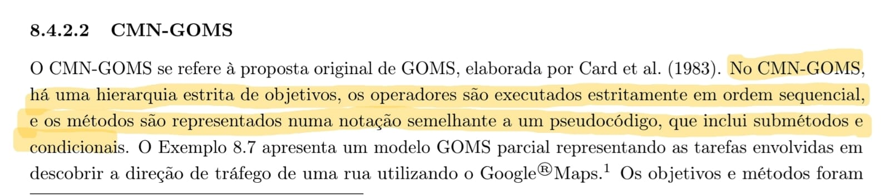
...agem 12** apresenta o Exemplo 8.7, que demonstra um modelo CMN-GOMS sem detalhes para a tarefa de "descobrir a direção de tráfego de uma rua" no Google Maps. O objetivo principal (GOAL 0) é decomposto em subobjetivos (GOAL 1 e GOAL 2), oferecendo métodos alternativos de navegação que são condicionados por regras de seleção (SEL. RULE) baseadas no nível de conhecimento do usuário sobre o local. (BARBOSA et al., 2021)[PRINT] 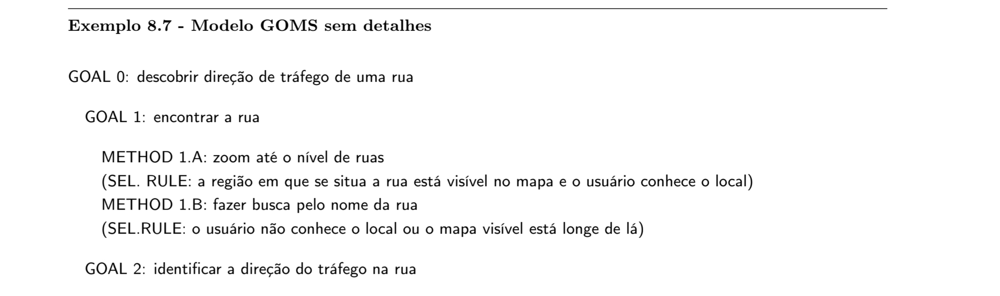
Este modelo detalhado expande os métodos até o nível mais granular das operações (OP.), como "deslocar o cursor do mouse" (OP. 1.A.A.1) ou "girar a roda do mouse para a frente" (OP. 1.A.A.2), mapeando de forma exaustiva todas as regras de seleção e passos físicos necessários para cumprir a meta no sistema. (BARBOSA et al., 2021)[PRINT] . (BARBOSA et al., 2021)[PRINT]
CPM-GOMS¶
A sigla CPM-GOMS tem dupla origem: ela representa os operadores cognitivos, perceptivos e motores, e também faz referência à abordagem do Critical Path Method (técnica de análise do caminho crítico). Esta versão do GOMS baseia-se diretamente no processador humano de informações (MHP) e em seu modelo de estágios paralelos. Diferente das abordagens anteriores, o CPM-GOMS não pressupõe que os operadores sejam executados de forma estritamente sequencial; pelo contrário, atividades cognitivas, perceptivas e motoras podem ocorrer em paralelo, dependendo da natureza da tarefa. (BARBOSA et al., 2021)[PRINT] 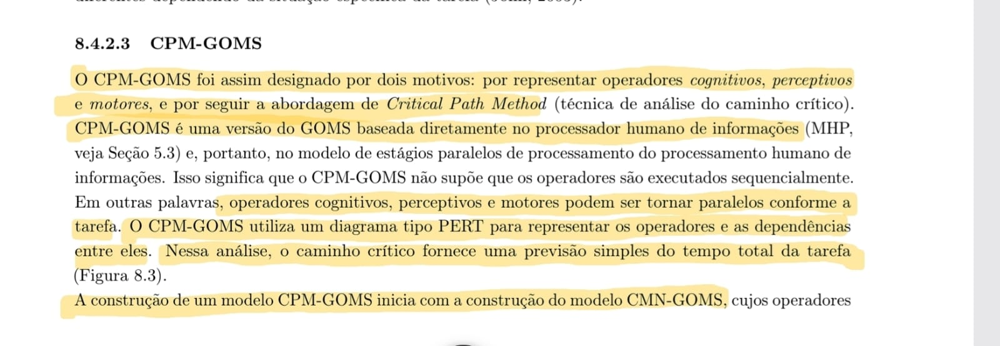
O CPM-GOMS utiliza um diagrama do tipo PERT para mapear visualmente os operadores e suas dependências. Neste diagrama, é possível observar linhas do tempo paralelas para diferentes recursos do processamento humano, como visão, cognição, mão direita, mão esquerda e movimento dos olhos. O "caminho crítico" traçado através dessas dependências fornece uma previsão simples do tempo total necessário para concluir a tarefa de interação. (BARBOSA et al., 2021)[PRINT] 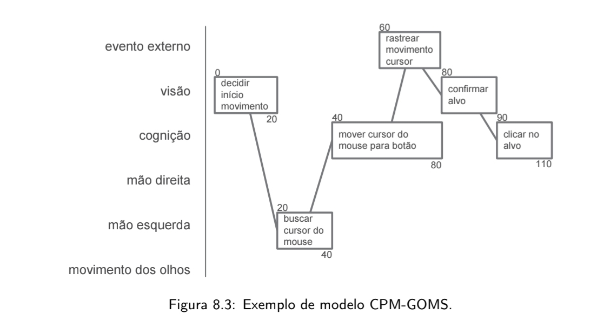
Por fim, a construção de um modelo CPM-GOMS se inicia a partir de um modelo CMN-GOMS prévio. Os operadores identificados inicialmente são então classificados de forma mais aprofundada nas categorias do MHP (cognitivos, perceptivos e motores). A cada um desses operadores é atribuída uma duração estimada. Somando-se esses valores ao longo do caminho crítico, calcula-se o tempo previsto de execução da tarefa, o que possibilita aos designers realizar análises qualitativas da relação entre os aspectos do design e o tempo de execução, além de simular soluções alternativas. (BARBOSA et al., 2021)[PRINT] 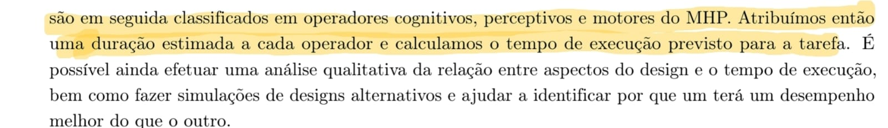
Árvores de Tarefas Concorrentes (ConcurTaskTrees – CTT)¶
Introdução ao CTT¶
O modelo de árvores de tarefas concorrentes (ConcurTaskTrees – CTT) foi criado para auxiliar a avaliação e o design de IHC. Nesse modelo, existem quatro tipos de tarefas: tarefas do usuário (realizadas fora do sistema), tarefas do sistema (em que o sistema realiza um processamento sem interagir com o usuário), tarefas interativas (em que ocorrem os diálogos usuário–sistema) e tarefas abstratas (que não são tarefas em si, mas sim uma representação de uma composição de tarefas). Assim como na análise hierárquica, a leitura do modelo exige que, para considerar uma tarefa principal realizada, suas tarefas subordinadas devem ter sido realizadas (BARBOSA et al., 2021)[PRINT] 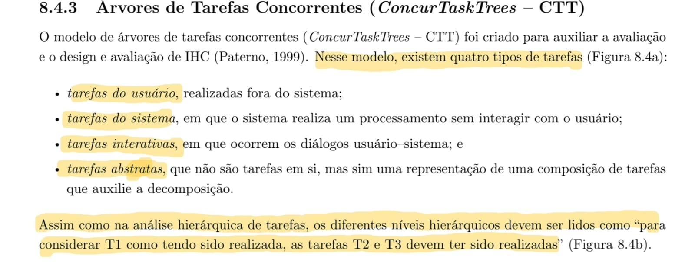
A representação visual na notação CTT apresenta os ícones específicos para cada um dos quatro tipos de tarefas (usuário, sistema, interativa e abstrata), que podem ser representadas por uma estrutura hierárquica clássica do modelo, conectando uma tarefa abstrata raiz (T1) às suas tarefas subordinadas (T2 e T3) (BARBOSA et al., 2021)[PRINT] 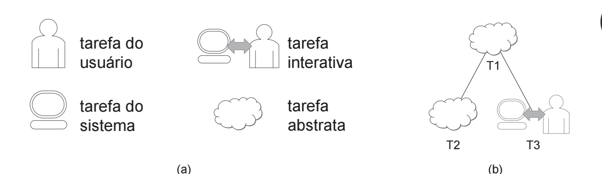
Além da hierarquia estrita, o CTT permite representar diversas relações lógicas e temporais entre as tarefas, aumentando consideravelmente a expressividade da notação. As principais relações descritas são: ativação ( 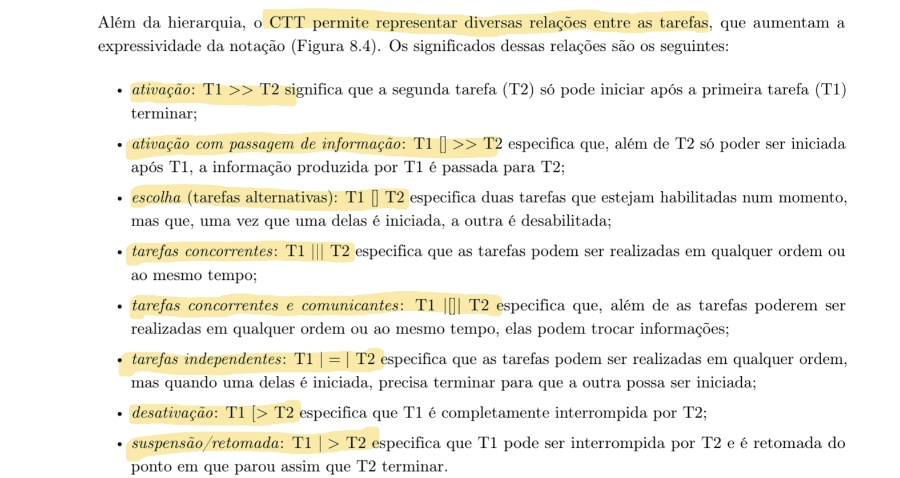>>), ativação com passagem de informação ([]>>), escolha entre tarefas alternativas ([]), tarefas concorrentes (|||), tarefas concorrentes e comunicantes (|[]|), tarefas independentes (|=|), desativação ([>) e suspensão/retomada (|>) (BARBOSA et al., 2021)[PRINT]
Para facilitar o entendimento visual dessas conexões a Figura 1 mapeia graficamente cada uma das relações entre tarefas no CTT. Os símbolos textuais correspondentes a cada tipo de interação (como concorrência ou escolha) são posicionados nas linhas que unem os nós das tarefas.
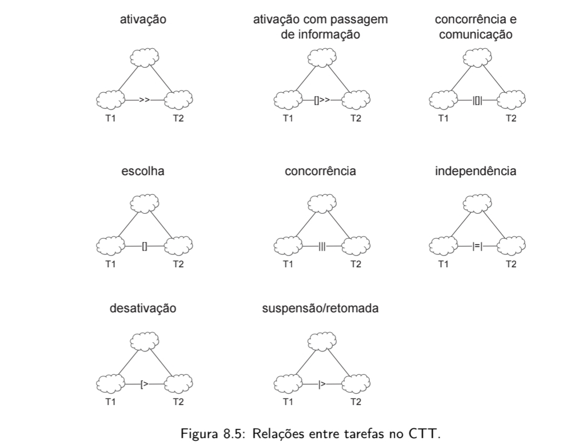
Fonte: BARBOSA et al. (2021, p.202)
Por fim, a Imagem 22 consolida todos esses conceitos por meio da Figura 8.6, apresentando um exemplo prático de um modelo de tarefas em CTT para o objetivo de "Agendar compromisso". O diagrama detalha como a tarefa abstrata no topo da hierarquia se decompõe em subtarefas específicas (como examinar compromissos, informar dados e gravar no sistema), interligando diferentes tipos de tarefas (usuário, interativa e de sistema) através das relações de ativação, passagem de informação e concorrência (BARBOSA et al., 2021)[PRINT] 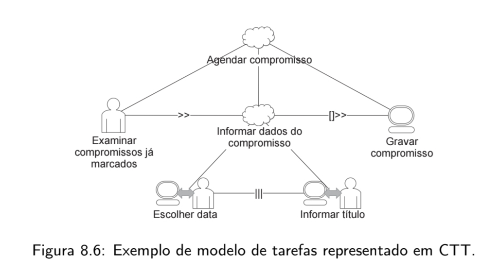
Análise de Tarefas Realizadas¶
1. Pré-agendamento de exames via envio de guias médicas¶
Esta análise avalia a funcionalidade de pré-agendamento de exames via envio de guias médicas no portal do Sabin. No cenário mapeado, a usuária (Márcia) tenta utilizar o fluxo automatizado do site enviando fotos dos pedidos médicos. O sistema identifica os exames, mas fornece uma instrução genérica exigindo 12 horas de jejum.
Como o paciente (seu marido) faz uso de medicação contínua para hipertensão logo ao acordar, Márcia tenta utilizar o botão de "Dúvidas Frequentes" para verificar se a medicação quebra o jejum. Ao se deparar com um manual em PDF longo e sem ferramenta de busca, ela se sente insegura, abandona o processo automatizado e recorre ao ícone do WhatsApp para finalizar o agendamento com um atendente humano, garantindo que o preparo seja feito corretamente.
Abaixo, a decomposição dessa interação utilizando os métodos de Árvores de Tarefas Concorrentes (CTT) e GOMS (KLM).
1.1 Árvores de Tarefas Concorrentes (ConcurTaskTrees - CTT)¶
A notação CTT a seguir demonstra a decomposição hierárquica do cenário. O processo ilustra a interrupção (desativação [>) do fluxo principal automatizado devido à falha de suporte da interface, forçando a usuária a migrar para um fluxo alternativo de atendimento.
Legenda de Tarefas:
☁️ Abstrata | 👤 Usuário | 🖥️ Sistema | 🖱️ Interativa
Legenda de Relações:
>> (Ativação) | []>> (Ativação com passagem de informação) | [> (Desativação)
- 0. Agendar exames com dúvida crítica ☁️
- 1. Tentar agendamento automatizado ☁️
[>2. Buscar atendimento humano (WhatsApp) ☁️- 1.1. Acessar funcionalidade de envio de pedido 🖱️
>> - 1.2. Tirar fotos das guias médicas 🖱️
[]>> - 1.3. Processar imagens e identificar exames 🖥️
[]>> - 1.4. Exibir aviso genérico de preparo (12h de jejum) 🖥️
>> - 1.5. Avaliar instruções e constatar conflito com medicação 👤
>> - 1.6. Esclarecer dúvida de preparo ☁️
- 1.6.1. Clicar no botão "Dúvidas Frequentes" 🖱️
>> - 1.6.2. Carregar e exibir manual em PDF 🖥️
>> - 1.6.3. Tentar localizar termo "hipertensão" no documento 👤
>> - 1.6.4. Constatar impossibilidade de busca e abandonar fluxo 🖱️
- 1.6.1. Clicar no botão "Dúvidas Frequentes" 🖱️
- 1.1. Acessar funcionalidade de envio de pedido 🖱️
- 2. Buscar atendimento humano (WhatsApp) ☁️
- 2.1. Retornar à tela inicial do aplicativo/site 🖱️
>> - 2.2. Clicar no ícone de atendimento via WhatsApp 🖱️
>> - 2.3. Enviar fotos das guias e relatar dúvida ao atendente 🖱️
- 2.1. Retornar à tela inicial do aplicativo/site 🖱️
- 1. Tentar agendamento automatizado ☁️
1.2 GOMS: Keystroke-Level Method (KLM)¶
A análise KLM abaixo quantifica o tempo despendido pela usuária no cenário, adaptando os operadores primitivos (Point, Click) para a interação via tela de toque (Smartphone).
Operadores utilizados: * M (Preparação mental): 1,20 s * P (Apontar para o elemento na tela): 1,10 s * K (Tocar/Clicar no botão ou tela): 0,20 s * W(t) (Tempo de espera de resposta do sistema): Estimado
Análise da Tarefa: Tentar agendar exame e migrar para WhatsApp¶
| operação | descrição | tempo (em s) |
|---|---|---|
| método: fluxo automatizado (falha) | ||
| M | preparação (decidir iniciar agendamento) | 1,20 |
| P | levar o dedo até o botão de envio de guia | 1,10 |
| K | tocar no botão | 0,20 |
| M | preparação (posicionar câmera sobre as guias) | 1,20 |
| P | levar o dedo até o disparador da câmera | 1,10 |
| K | tocar para capturar e enviar foto | 0,20 |
| W(t) | espera pela leitura da IA (estimativa) | 3,00 |
| M | preparação (ler o preparo de 12h e lembrar do remédio) | 1,20 |
| P | levar o dedo até o botão "Dúvidas Frequentes" | 1,10 |
| K | tocar no botão | 0,20 |
| W(t) | espera pelo carregamento do PDF (estimativa) | 2,00 |
| M | preparação (rolar o PDF, perceber que é longo e frustrar-se) | 1,20 |
| P | levar o dedo até o botão de fechar/voltar | 1,10 |
| K | tocar no botão | 0,20 |
| método: recuperação via atendimento humano | ||
| M | preparação (decidir abandonar e usar o WhatsApp) | 1,20 |
| P | levar o dedo até o ícone de Início/Home | 1,10 |
| K | tocar no botão | 0,20 |
| M | preparação (localizar o ícone flutuante do WhatsApp) | 1,20 |
| P | levar o dedo até o ícone do WhatsApp | 1,10 |
| K | tocar no botão para abrir o chat | 0,20 |
| tempo total estimado do cenário | 19,80 |
Observação Analítica: A tarefa de pré-agendamento deveria ser um fluxo rápido de inserção de dados. No entanto, devido à falha de suporte informacional (PDF não pesquisável), a usuária gasta quase 20 segundos apenas para realizar tentativas frustradas e ser obrigada a iniciar um segundo fluxo (WhatsApp), o que sobrecarrega tanto o tempo da usuária quanto os recursos de atendimento humano do laboratório.
2.Visualizar Imagem DICOM¶
A HTA foi utilizada para mapear a decomposição do objetivo principal (Analisar Imagem DICOM) em subobjetivos. O foco desta análise é identificar a sequência necessária para o sucesso da tarefa e explicitar os problemas e recomendações associados a cada etapa, utilizando o critério de probabilidade e custo de falha para propor soluções preventivas.
1.2 Diagrama Hierárquico (Estrutura Lógica) da análise Hierárquica de Tarefas (HTA):¶
0. Analisar exame de imagem (DICOM) [Plano: 1 > 2] (Sequencial)
├── 1. Localizar o exame do paciente [Plano: 1 / 2] (Seleção)
│ ├── 1.1 Pesquisar pelo nome do paciente
│ └── 1.2 Buscar na lista de exames recentes
└── 2. Operar o visualizador DICOM [Plano: 1 > 2] (Sequencial)
├── 2.1 Ativar visualizador (carregar plugin/imagem)
└── 2.2 Manipular a imagem [Plano: 1 + 2 + 3] (Paralelo)
├── 2.2.1 Ajustar brilho/contraste (janelamento)
├── 2.2.2 Aplicar zoom
└── 2.2.3 Realizar medições na lesão
Tabela HTA¶
| Objetivo / Operação | Plano | Input | Ação | Feedback | Problemas e Recomendações |
|---|---|---|---|---|---|
| 0. Analisar exame de imagem (DICOM) | 1 > 2 | Médico autenticado no portal e com necessidade de avaliar o exame. | Localizar o exame do paciente e operar o visualizador DICOM. | Exame visualizado com qualidade suficiente para análise diagnóstica. | Se houver falha no carregamento, o sistema deve oferecer alternativa de contingência. |
| 1. Localizar o exame do paciente | 1 / 2 | Dados do paciente ou histórico recente disponível. | Pesquisar pelo nome do paciente ou consultar a lista de exames recentes. | Exame correto localizado no sistema. | Recomenda-se incluir filtros por data, modalidade e tipo de exame. |
| 2. Operar o visualizador DICOM | 1 > 2 | Exame selecionado no sistema. | Ativar o visualizador e, em seguida, manipular a imagem. | Imagem exibida e disponível para inspeção clínica. | Recomenda-se visualizador nativo no navegador e carregamento mais robusto. |
| 2.2 Manipular a imagem | 1 + 2 + 3 | Imagem carregada no visualizador. | Ajustar brilho/contraste, aplicar zoom e realizar medições conforme necessário. | Imagem adequada para interpretação e análise da lesão. | Recomenda-se manter ferramentas principais sempre visíveis e com ícones padronizados. |
2.2.Árvore de Tarefas Concorrentes (CTT)¶
A Árvore de Tarefas Concorrentes (Concurrence Task Trees - CTT), desenvolvida por Fabio Paternò, é um modelo de análise que avança a estruturação clássica da HTA. Enquanto a HTA foca na decomposição hierárquica baseada em objetivos e no custo de falhas, o CTT destaca-se por representar visualmente e formalmente as relações temporais e lógicas entre as tarefas, além de classificar explicitamente a alocação de responsabilidades (se a ação é feita pelo usuário, pelo sistema ou pela interação de ambos).
A utilização do CTT justifica-se na avaliação de funcionalidades complexas e dinâmicas, como o visualizador de imagens DICOM. A análise de exames médicos pelos profissionais de saúde raramente ocorre de forma linear ou rígida. O médico frequentemente realiza ações simultâneas e intercaladas, como aplicar zoom enquanto movimenta a imagem, ou iniciar a medição de uma lesão e suspendê-la temporariamente para ajustar o janelamento de contraste. O CTT permite mapear essa flexibilidade de forma estruturada assim como apresentado na figura I.
Figura II - Diagrama em Árvore de Tarefas Concorrentes (CTT)
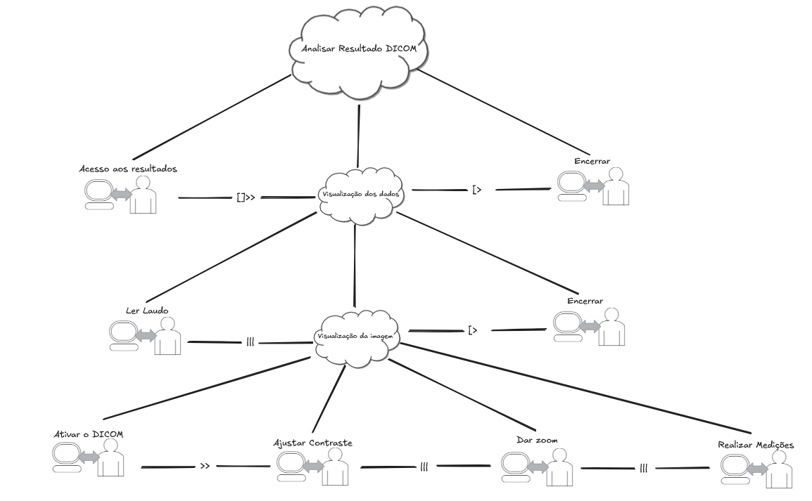
Fonte: autoria própria.
3. Visualização e Download de Laudo de Exame¶
Esta análise aborda uma funcionalidade de extrema importância e alta frequência de uso no portal do Sabin: a consulta e o download de resultados de exames (laudos). No cenário analisado, a usuária Camila (gestante e paciente frequente) acessa o sistema pelo smartphone com o objetivo de verificar se o resultado do seu último exame de acompanhamento pré-natal já foi liberado e, em seguida, baixar o PDF para enviar à sua obstetra.
Como a usuária tem um perfil de alta ansiedade por conta da gestação e realiza exames frequentemente, a agilidade do login e a clareza visual do status do exame na tela são fatores críticos para o sucesso da interação e a satisfação com a interface.
Abaixo, apresentamos a decomposição dessa interação utilizando a Análise Hierárquica de Tarefas (HTA) para estruturar o fluxo lógico e o método GOMS (KLM) para quantificar o tempo de execução na interface móvel.
3.1 Análise Hierárquica de Tarefas (HTA)¶
A HTA abaixo descreve o plano de ação necessário para que a usuária cumpra seu objetivo principal a partir do momento em que pega o celular.
0. Obter laudo de exame online [Plano: 1 > 2 > 3 > 4] * 1. Realizar Autenticação no portal [Plano: 1.1 > 1.2 > 1.3 > 1.4] * 1.1. Acessar a página de login/resultados * 1.2. Escolher o método de acesso rápido (Token via SMS) * 1.3. Inserir o CPF * 1.4. Inserir o código recebido via SMS * 2. Localizar o exame de interesse [Plano: 2.1 > 2.2] * 2.1. Acessar a aba ou seção "Últimos Resultados" * 2.2. Identificar o exame desejado pela data ou nome * 3. Baixar o documento do laudo [Plano: 3.1 > 3.2] * 3.1. Clicar sobre o card do exame liberado * 3.2. Acionar o botão "Baixar PDF" * 4. Compartilhar o documento (Tarefa externa) [Plano: 4.1 > 4.2] * 4.1. Selecionar a opção de compartilhamento nativa do smartphone * 4.2. Escolher o mensageiro (WhatsApp) e enviar para a médica
Tabela HTA:
| Objetivo / Operação | Plano | Input | Ação | Feedback | Problemas e Recomendações |
|---|---|---|---|---|---|
| 0. Obter laudo | 1>2>3>4 | Necessidade de ver o resultado do exame | Logar, localizar exame, baixar PDF e compartilhar | Laudo em PDF no aparelho ou enviado ao médico | Lentidão ou falha no download geram extrema frustração. |
| 1. Autenticação | 1>2>3>4 | Tela de Login | Optar por login via SMS e inserir dados | Acesso concedido, direcionamento à Home | Atraso no envio do SMS pode interromper o fluxo; manter opção de senha padrão bem visível. |
| 2. Localizar exame | 1>2 | Logado na Home | Rolar tela até "Últimos Resultados" e clicar no exame | Tela de detalhes do exame específica carregada | Exames devem ter status visual muito claro (ex: "Em processamento" vs "Liberado"). |
| 3. Baixar PDF | 1>2 | Tela de detalhes do exame | Tocar no botão de download | Arquivo PDF aberto/salvo no celular | O botão "Baixar PDF" deve ter grande destaque (Call to Action primário) e permitir baixar todos os exames de um pedido em um arquivo único. |
3.2 GOMS: Keystroke-Level Method (KLM)¶
A análise KLM a seguir quantifica o tempo despendido pela usuária no cenário, assumindo que ela já está logada no sistema e navegando pelo Smartphone (adaptação dos operadores para tela sensível ao toque).
Operadores utilizados (Padrão Mobile): * M (Preparação mental): 1,20 s * P (Apontar para o elemento na tela / Rolar tela): 1,10 s * K (Tocar/Clicar no botão ou tela): 0,20 s * W(t) (Tempo de espera de resposta do sistema): Estimado conforme o contexto
Análise da Tarefa: Localizar exame recente e baixar PDF¶
| Operação | Descrição | Tempo (em s) |
|---|---|---|
| método: | fluxo de download de laudo (sucesso) | |
| M | preparação mental (decidir procurar os exames mais recentes na tela) | 1,20 |
| P | rolar a tela / apontar o dedo até a seção "Últimos Resultados" | 1,10 |
| K | tocar sobre o card do exame correspondente à data correta | 0,20 |
| W(t) | aguardar o carregamento da página de detalhes do exame (estimativa) | 1,50 |
| M | preparação mental (localizar a opção de download) | 1,20 |
| P | apontar o dedo para o ícone/botão de "Baixar PDF" | 1,10 |
| K | tocar no botão de download | 0,20 |
| W(t) | aguardar a geração e abertura do PDF no aparelho (estimativa) | 2,00 |
| tempo total estimado da tarefa | 8,50 |
Observação Analítica: A tarefa de baixar um laudo para um usuário já logado é um processo que deve ser extremamente rápido e direto, custando em média menos de 10 segundos. O ponto crítico (gargalo) é o tempo de resposta do sistema W(t) para gerar o PDF. A interface deve priorizar a visibilidade da seção "Últimos Resultados" logo na primeira dobra da tela inicial para minimizar o esforço de busca (Operadores M e P) por parte da paciente.
Análise GOMS — Agendamento de Exame no Site Sabin¶
Introdução¶
A técnica GOMS (Goals, Operators, Methods, Selection Rules) é utilizada para modelar o comportamento de usuários experientes durante a execução de tarefas em sistemas computacionais. Diferente da HTA, que foca na decomposição hierárquica de objetivos, o GOMS descreve o conhecimento procedimental, ou seja, como o usuário realiza a tarefa passo a passo, assumindo que ele já domina o sistema e não comete erros.
Essa abordagem permite analisar a eficiência da interação, identificar gargalos e até estimar o tempo de execução de tarefas por meio do modelo KLM (Keystroke-Level Model).
1. Goals (Objetivos)¶
- G0: Agendar exame laboratorial online
- G1: Acessar o site do Sabin
- G2: Iniciar processo de agendamento
- G3: Selecionar exame
- G4: Escolher unidade e horário
- G5: Informar dados pessoais
- G6: Confirmar agendamento
2. Operators (Operadores)¶
Operadores físicos (externos)¶
- K: pressionar tecla
- P: apontar cursor
- B: clicar (pressionar/soltar botão do mouse)
- H: mover mão entre dispositivos
Operadores cognitivos¶
- M: preparação mental
Sistema¶
- R: tempo de resposta do sistema
3. Methods (Métodos)¶
Método principal (fluxo padrão via interface web)¶
-
Acessar site: M → H → K → K → R
-
Iniciar agendamento: M → P → B → R
-
Selecionar exame: M → K → K → P → B → R
-
Escolher unidade e horário: M → P → B → P → B → R
-
Informar dados pessoais: M → K → K → K → R
-
Confirmar agendamento: M → P → B → R
4. Selection Rules (Regras de Seleção)¶
- Se o usuário souber o nome do exame → usar busca direta
- Caso contrário → navegar por categorias/listas
- Se houver dados previamente salvos → usar autopreenchimento
- Caso contrário → preencher manualmente
- Se houver múltiplos horários → escolher o mais conveniente
5. Tabela GOMS¶
| Goal | Método | Operadores | Observação |
|---|---|---|---|
| G1: Acessar site | Abrir navegador + acessar URL | M, H, K, K, R | Pode ser automatizado (favoritos) |
| G2: Iniciar agendamento | Clicar na funcionalidade | M, P, B, R | Depende da visibilidade do botão |
| G3: Selecionar exame | Buscar e selecionar | M, K, K, P, B, R | Sensível à qualidade da busca |
| G4: Escolher unidade/horário | Seleção sequencial | M, P, B, P, B, R | Pode gerar carga cognitiva |
| G5: Informar dados | Preencher formulário | M, K, K, K, R | Propenso a erros |
| G6: Confirmar | Revisar e confirmar | M, P, B, R | Feedback crítico |
6. Análise KLM (Estimativa de Tempo)¶
Considerando um usuário mediano:
| Etapa | Sequência | Tempo (s) |
|---|---|---|
| Acessar site | M + K + K + R | ~1,6 + R |
| Iniciar agendamento | M + P + B + R | ~2,4 + R |
| Selecionar exame | M + 2K + P + B + R | ~2,8 + R |
| Escolher unidade/horário | M + P + B + P + B + R | ~3,6 + R |
| Informar dados | M + 3K + R | ~1,8 + R |
| Confirmar | M + P + B + R | ~2,4 + R |
Tempo total estimado: ~14–16 segundos + tempo de resposta do sistema
7. Interpretação¶
A análise evidencia que:
- O fluxo é linear e previsível para usuários experientes
- As etapas mais custosas são:
- Seleção de exame (G3)
- Escolha de unidade/horário (G4)
- A etapa mais crítica em termos de erro é:
- Entrada de dados (G5)
8. Insights de Design¶
- Reduzir número de cliques (P, B)
- Diminuir carga cognitiva (M) com melhor organização da interface
- Implementar autofill para dados pessoais
- Melhorar mecanismo de busca de exames
- Exibir disponibilidade de forma clara para unidade/horário
9. Conclusão¶
A análise GOMS permite entender o desempenho de usuários experientes no sistema de agendamento do Sabin, evidenciando oportunidades claras de otimização.
Enquanto a HTA estrutura o problema em termos de objetivos, o GOMS mostra como esses objetivos são operacionalizados, permitindo avaliar eficiência, consistência e qualidade da interação.
Essa abordagem é particularmente útil para orientar melhorias que reduzam tempo de execução, esforço cognitivo e probabilidade de erro.
Análise Hierárquica de Tarefas (HTA) — Agendamento de Exame no Site Sabin¶
A Análise Hierárquica de Tarefas (HTA — Hierarchical Task Analysis) é uma técnica amplamente utilizada em Interação Humano-Computador (IHC) para compreender como os usuários realizam atividades em sistemas complexos. Em vez de focar apenas nas ações, a HTA parte dos objetivos dos usuários, decompondo-os em subobjetivos e operações, organizados por meio de um plano que define a ordem e a relação entre essas tarefas.
Essa abordagem permite identificar pontos críticos de interação, possíveis erros e oportunidades de melhoria no design, sendo especialmente útil na avaliação e no redesenho de sistemas interativos.
Neste contexto, a seguir é apresentada uma HTA para o processo de agendamento de exames laboratoriais no site do Sabin, modelando as etapas necessárias para que o usuário atinja seu objetivo principal.
A funcionalidade analisada está apresentada na Figura III:
Figura III - Funcionalidade de agendamento de exame em diagrama HTA.
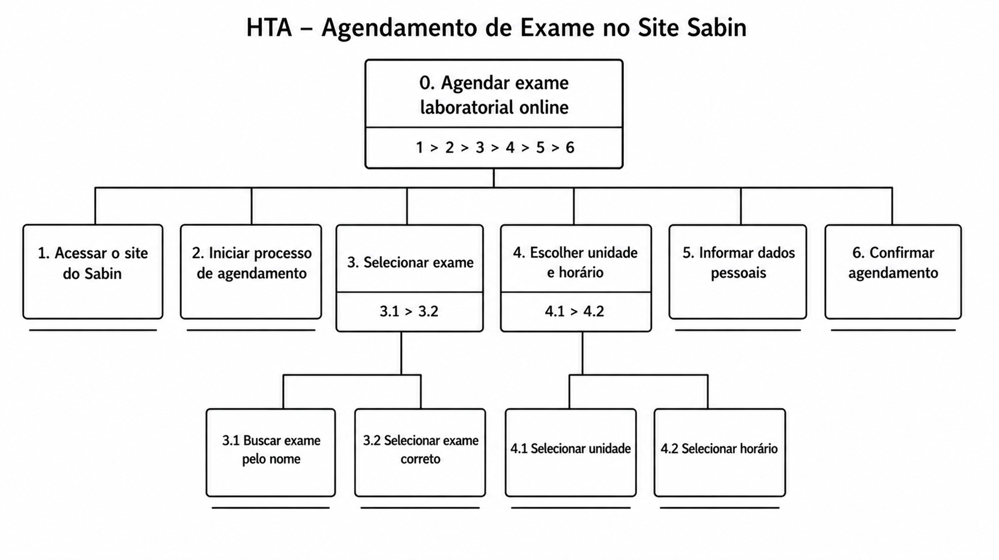
Fonte: autoria própria
0. Agendar exame laboratorial online¶
Plano geral:
1 > 2 > 3 > 4 > 5 > 6
As etapas devem ser executadas de forma sequencial, até a confirmação do agendamento.
Decomposição Hierárquica¶
1. Acessar o site do Sabin¶
Primeira etapa do fluxo, onde o usuário entra no sistema.
- Input: acesso a um navegador/dispositivo
- Ação: abrir o site
- Feedback esperado: página inicial carregada corretamente
2. Iniciar processo de agendamento¶
O usuário localiza a funcionalidade de agendamento.
- Ação: acessar a opção de agendamento
- Feedback: interface de busca de exames exibida
3. Selecionar exame¶
Plano: 3.1 > 3.2
3.1 Buscar exame pelo nome¶
- Ação: digitar o nome do exame
- Feedback: lista de exames disponíveis
3.2 Selecionar exame correto¶
- Ação: escolher o exame desejado
- Feedback: exame selecionado
4. Escolher unidade e horário¶
Plano: 4.1 > 4.2
4.1 Selecionar unidade¶
- Ação: escolher a unidade/laboratório
- Feedback: unidade selecionada
4.2 Selecionar horário¶
- Ação: escolher data e horário disponíveis
- Feedback: horário definido
5. Informar dados pessoais¶
Etapa de preenchimento ou validação dos dados do usuário.
- Ação: inserir ou confirmar dados pessoais
- Feedback: dados validados pelo sistema
6. Confirmar agendamento¶
Etapa final do processo.
- Ação: revisar informações e confirmar
- Feedback: confirmação do agendamento
Interpretação da Análise¶
A HTA evidencia que o processo é:
- Sequencial, sem ramificações no fluxo principal
- Dependente de decisões intermediárias (etapas 3 e 4)
- Estruturado com dependência entre tarefas
Pontos Críticos (Visão de IHC)¶
- Busca de exames: pode gerar ambiguidade
- Escolha de unidade/horário: depende de boa visualização
- Entrada de dados: propensa a erros
- Confirmação: requer feedback claro
Conclusão¶
A HTA permite compreender o processo de agendamento como um fluxo orientado a objetivos, facilitando a identificação de problemas de usabilidade e apoiando melhorias no design do sistema. Etapas que envolvem decisão e entrada de dados devem receber maior atenção para garantir eficiência, eficácia e satisfação do usuário.
Referência bibliográfica¶
BARBOSA, S. D. J. et al. Interação Humano-Computador e Experiência do Usuário. 1. ed. Rio de Janeiro: Autopublicação, 2021.
Histórico de Versão¶
| Versão | Data | Descrição | Autor | Revisor |
|---|---|---|---|---|
| 1.0 | 1/05/2026 | Criação do documento | Maria Laura | Hugo Freitas Silva |
| 1.1 | 4/05/2026 | Ajustes no documento | Ingrid Alves |